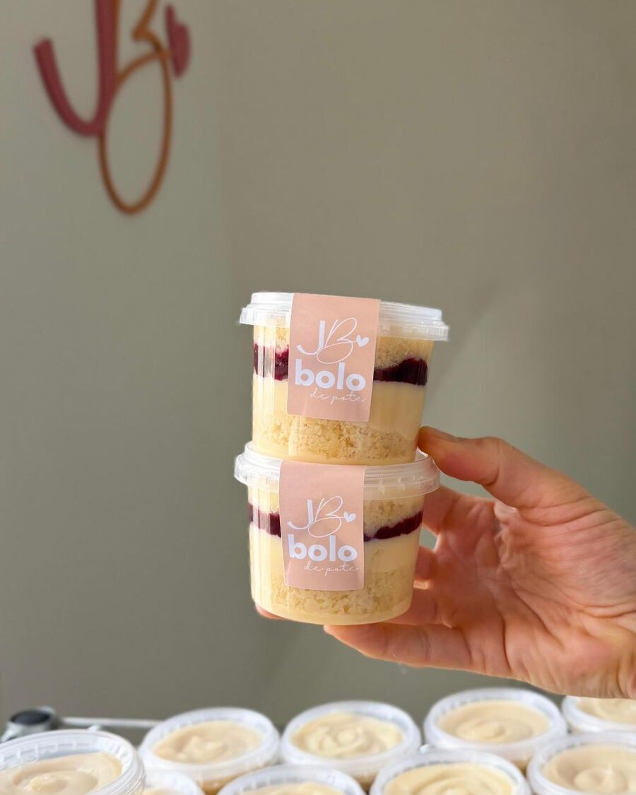

Para confeitarias de delivery
o plano pra sua confeitaria crescer.
Você manda os seus números e conta como a sua loja funciona hoje. A gente analisa tudo com a mesma régua que usa na JB, e a Jessica te entrega um plano de crescimento escrito, com uma chamada de vídeo para explicar cada passo.

Para quem é
se você se vê aqui, é pra você.
- Você vende doces pelo iFood, 99Food ou Keeta, ou quer começar.
- O dinheiro entra, mas no fim do mês quase não sobra.
- Você não sabe se o seu preço aguenta as taxas e as promoções de cada app.
- Quer mais pedidos sem virar refém do desconto.
- Trabalha com pouca gente e precisa saber o que fazer primeiro.
Não é para
- Quem procura receita. Para isso tem os e-books da Jessica.
- Quem quer que alguém mexa na loja por você. Você recebe o plano e aplica.
- Quem espera resultado sem mudar nada na rotina.
Quem analisa
a régua da JB.
A Jessica criou a JB Confeitaria e hoje vende quase tudo pelos aplicativos. Cada preço, promoção e produto novo da casa é decidido com conta, não no chute. É essa mesma análise que vai para a sua loja, feita pela Jessica com a equipe que cuida dos números da JB.
O que vem no plano
seis partes e uma conversa.
- 1Raio X do seu negócioQuanto você vende, quanto realmente sobra em cada canal depois de taxa, promoção e embalagem, e onde o dinheiro está escapando.
- 2Preço certo em cada appA tabela dos seus produtos com o preço sugerido no iFood, na 99Food e na Keeta, e até quanto cada um aguenta de desconto.
- 3Cardápio e vitrineO que destacar, o que tirar, nomes, fotos, descrições e combos que fazem a pessoa colocar no carrinho.
- 4Promoção sem prejuízoQuais campanhas dos apps aceitar, quais recusar e como não somar descontos sem perceber.
- 5Avaliações e operaçãoComo subir a nota, responder avaliações e não perder pedido por atraso ou falta de produto.
- 6Plano de 90 diasAs ações da primeira semana ao terceiro mês, em ordem de prioridade, com metas simples para você acompanhar.
Como funciona
quatro passos.
- 1Você garante a sua vagaO pagamento vem antes de tudo. São poucas vagas por mês, para cada loja ser olhada com calma.
- 2Você manda os seus dadosNum formulário de 20 a 30 minutos, mais os prints dos relatórios dos apps. Dá para salvar e continuar depois.
- 3A gente analisaEm até 7 dias úteis depois de receber tudo.
- 4Plano e chamadaVocê recebe o plano escrito e marca a chamada com a Jessica.
Investimento
pagamento único
- Análise completa dos seus dados
- Plano de crescimento escrito, em seis partes
- Chamada de vídeo com a Jessica
- Uma rodada de dúvidas por escrito
O que não entra
- Receitas, fichas técnicas e fornecedores da JB.
- Mexer nas suas contas dos aplicativos por você.
- Promessa de faturamento: o resultado vem de aplicar o plano.
Perguntas
antes de garantir.
Preciso já estar nos aplicativos?
O ideal é que sim, porque a análise usa os seus números. Se você ainda não está, o plano mostra como entrar com preço certo desde o primeiro dia.
Minha loja é pequena. Faz sentido?
Faz. O diagnóstico foi pensado para loja pequena, que trabalha com pouca gente e precisa saber o que fazer primeiro.
Quais dados vou precisar mandar?
Faturamento e pedidos dos últimos meses, preços e custos dos seus principais produtos, promoções que você usa e os prints dos relatórios financeiros dos apps. O formulário mostra tudo passo a passo, e você pode salvar e continuar depois.
Meus dados ficam seguros?
Ficam. Só a Jessica e a equipe que faz a análise veem o que você manda, e nada é usado para outra coisa além do seu diagnóstico.
Posso conversar com a Jessica antes de pagar?
Para atender cada loja com cuidado, a conversa com a Jessica acontece depois da análise, já com o seu plano pronto. Dúvida sobre o diagnóstico em si? Chama no WhatsApp que a equipe responde.
Quanto tempo leva tudo?
Depois que você manda os dados completos, a análise leva até 7 dias úteis. Em seguida vêm o plano e a chamada.